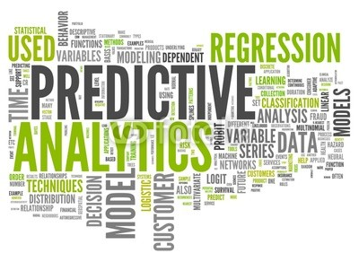
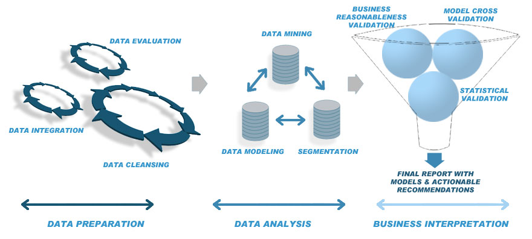
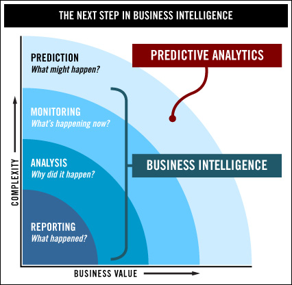
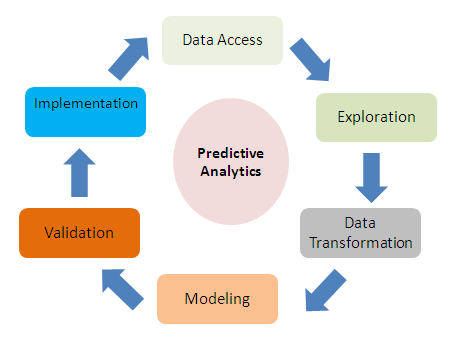
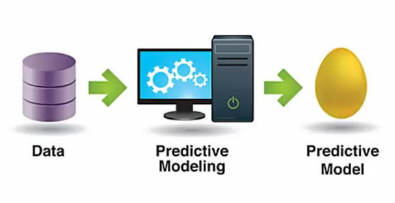
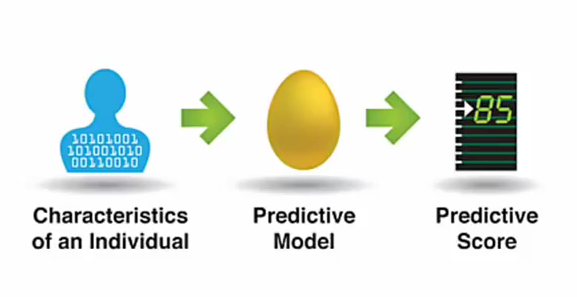

What is Big Data?

a collection of data sets so large and complex that it becomes difficult to process using on-hand database management tools or traditional data processing applications.
Wikipedia
First Big Data Problem
Information Overload
- The 1880 US Census took 8 years to tabulate
- Estimated that the 1890 Census would take 14 years!
|
Hollerith Tabulating Machine
- Using punch cards to record information
- Used electromechanical relays to increment mechanical counters
- Could count, sort, and set off a bell when card had been read
- it "tamed" the big data
- Census was completed in one year
- ...finishing months ahead of schedule and far under budget.
|
About Big Data
- It's about generating value from very large data sets
- The amount of data is growing exponentially for many reasons:
- retailers building databases of customer activity
- logistics, financial, government, & health are capturing more data
- social media
Provide opportunities to find insights into new and emerging types of data.IBM
Holds the promise of giving enterprises deeper insights into your customers, partners, and business.Oracle
Characteristics
Four V's of Big Data
- Volume => The amount of data determines value and potential of data.
- Velocity => Speed at which data is generated and processed.
- Variety => Different types of data is widely available.
- Value => How much is it worth?
- Variability / Veracity: How good is the data? Various levels of uncertainty and reliability
- Complexity: Data comes from multiple sources, needs to be linked, connected and correlated to make sense of the data.
Challenges with Big Data
Technical Challenges:
- Capturing, Curating, & Analysis of data
- Storage, & Sharing/Transferring
- Searching, Visualizing
Companies are ignoring large chunks of incoming data:
- Technology is primitive, resources are scarce
- Limited capacity for scanning and interpreting all the data coming in.
- As result, data is simply not getting processed. Leading to losses in opportunity
Leveraging Big Data
- Get a 360 degree view of the customer
- Build new applications or improve effectiveness of existing applications
- Realize new sources of competitive advantage
- Increase customer loyalty
Sectors benefiting from Big Data technologies:
- Government: predict and plan for civil unrest
- Health Care: data collection on patients, predict illness and help caregivers make better decisions
- Farming: accurately forecast bad weather and crop failures
- Science & Research: drive innovation
- Enterprises and Businesses: make better bussiness and marketing decisions
Big Data Technologies
Techniques:
- A/B Testing
- Crowdsourcing
- Data fusion and integration
- Genetic Algorithms
- Machine Learning
- Natural Language Processing
- Signal Processing
- Simulation
- Time series analysis
- Visualisation
Solutions:
- MapReduce
- Column-oriented databases
- Schema-less database (NoSQL databses)
- Hadoop
- Hive
- PIG
Hadoop

Leading Platform for Big Data Analytics
http://hadoop.apache.org/
Open Source software for Reliable, Scalable, Distributed Computing.
- Distributes storage and processing of large data sets across clusters of server computers.
- Detects and compensates for hardware, or other system problems, at the application level.
Consists of:
- Distributed File System - High bandwidth storage
- MapReduce - Distributes or maps data across multiple servers
- Each server summarizes the data it receives
- Aggregated in reduced state, allowing meaning to be derived from raw data
What is Predictive Analytics?

The practice of extracting information from existing data sets in order to determine patterns and predict future outcomes and trends.
Webopedia
About Predictive Analytics
- Encompasses statistical techniques for:
- Data Modeling
- Machine Learning
- Data Mining
- Analyzing current and historial facts to make predictons about the future

Improving Business Intelligence

Driving Deeper into the Individuals
Technology that learns from experience to predict the future behaviour of individuals in order to drive better decisions.
Imagine understanding the:
- Potential needs
- Habits
- Purchases
- Responses
...of each individual customer.
It can allow you to deliver a personalized experience based on that knowledge.
Working with Predictive Analytics

Implementing Predictive Analytics


Predictive Analytics - Models & Use Cases
Models can predict customer attributes and behaviour.
Using probability, models can anipate outcomes.
Very Powerful and very Profitable.
Examples of Uses:
- Direct Marketing
- Customer Retention
- Fraud Detection
- Risk Management
- Clinical Decision Support Systems
Building Adaptive Apps
Optimizing service to the user based on what you know about the customer/user.
- Adaptive apps anticipates custmomers
- Become their Digital Butler
Design Principles
- Learning who the customer really is
- Detect customer's intent in the moment
- Morph functionality and match content
- Optimize for device and delivery
Age of the customer
To treat like Royality = To treat like individuals
Treat like Royality to get their Loyality
Why Use Predictive Analytics?
It's better than guessing
Don't predict the future.
Influence it!
/